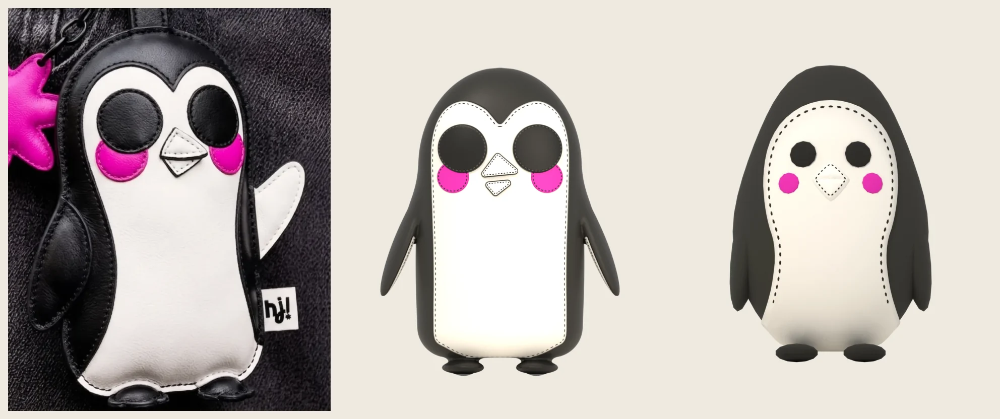
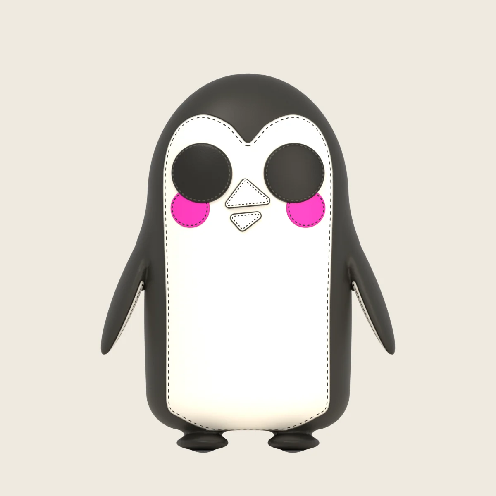
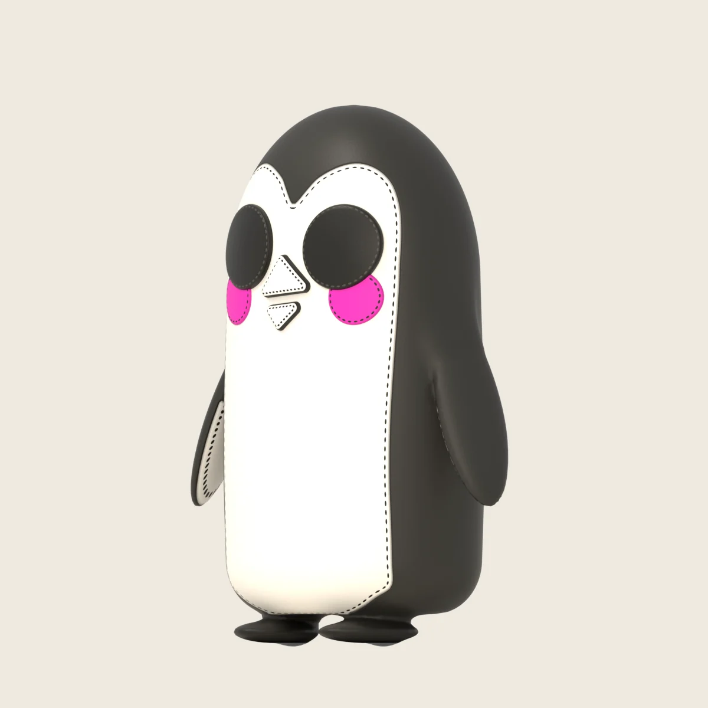
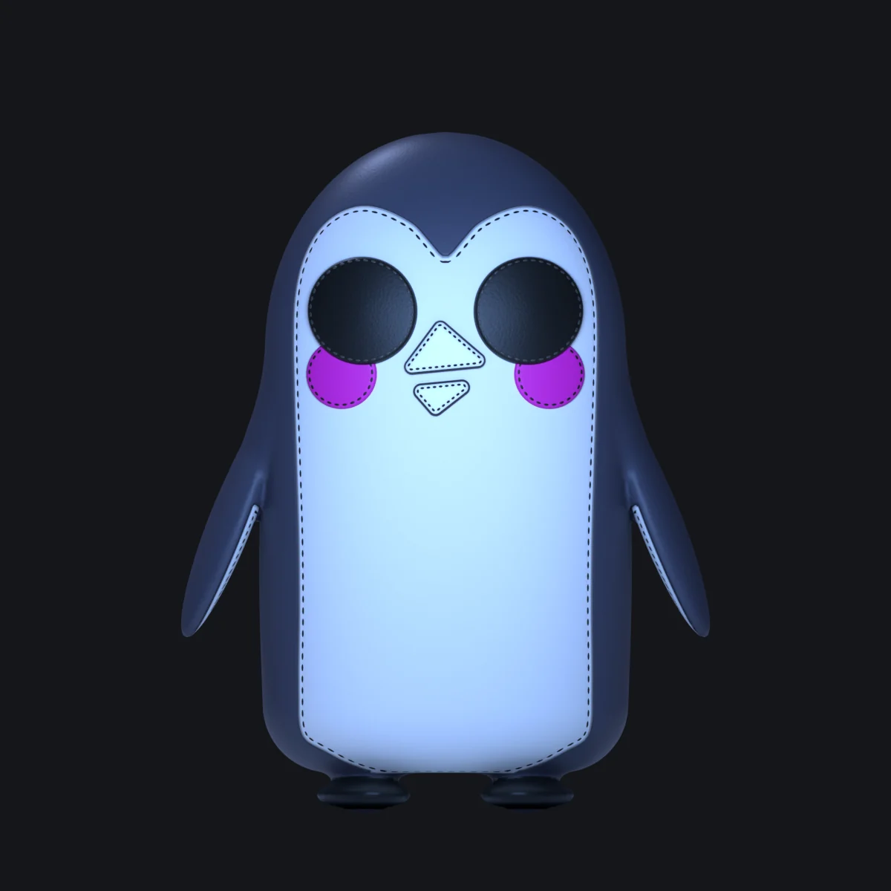
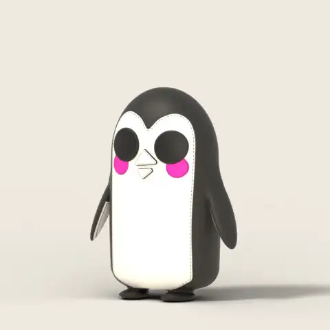
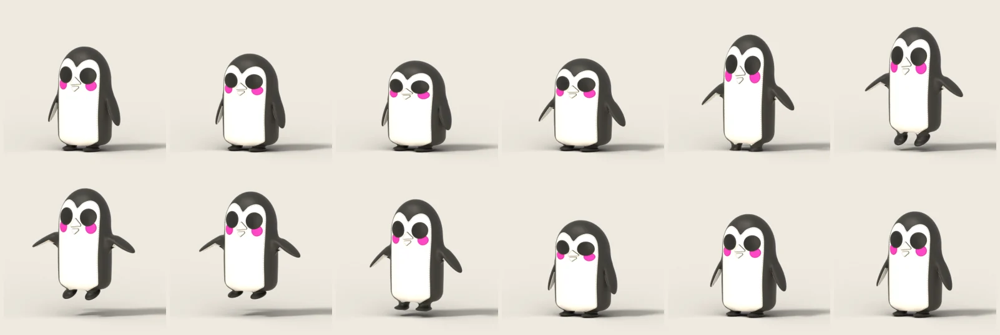
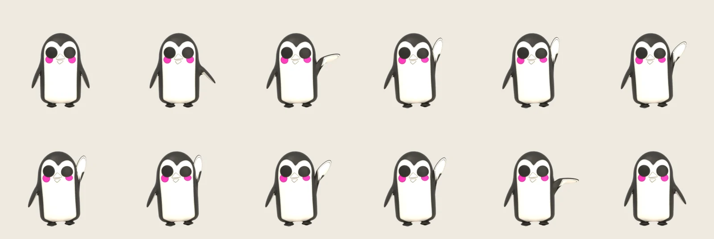

펭귄 v3 시안 — 초안 비율 · 두께 있는 3D · 붙어서 움직이는 관절
사용자 초안(가죽 키링 사진)의 비율 · 곡선 · 눈과 몸의 비율을 가져와, 납작한 실물을 그대로 베끼지 않고 두께가 있는 가죽 인형으로 다시 만들었다. 소품은 없다.
날개와 발은 몸과 한 장의 피부다. 어깨 · 엉덩이에서 몸통이 그대로 이어져 나오고, 관절 뼈가 그 피부를 늘려서 움직인다. 아직 제품(사무실 장면 · 랜딩 · penguin.glb)은 바꾸지 않았다.
나란히 보기
왼쪽 초안 · 가운데 v3 · 오른쪽 지금 v2. 초안은 사진이라 크기 · 원근이 다르다. v3 · v2 는 같은 정면 정사영 카메라.

초안 draft_1v3 시안현재 v2
턴어라운드 (소품 없음)
모든 방향이 같은 정사영 틀(폭 0.98 m · 중심 높이 0.40 m)이다. 라이트 조명 + 저녁 정면 한 장. 1200 px.





#474855 + 화면 빛 채움광관절 시험
날개 · 발이 몸에 붙은 채로 뼈가 움직이는지 보는 시험 동작이다. 움직이는 그림은 30 fps 로 반복된다.
뛰기 (1.2초)


날개 흔들기 (1.6초)

비율
W = 몸 폭(날개 빼고) 0.41 m 기준. 값은 penguin_v3.py 맨 위 상수에서 옮겼다.
| 항목 | v3 시안 | 초안에서 잰 값 | 지금 v2 |
|---|---|---|---|
| 키 : 폭 (몸) | 1.72 (0.705 / 0.41 m) | ≈ 1.8–1.9 (납작해서 길어 보임) | 1.59 |
| 깊이 : 폭 | 0.66 (0.27 m) | — (납작) | 0.68 |
| 몸 모양 | 둥근 캡슐: 옆이 거의 곧고 살짝 불룩, 큰 둥근 머리, 바닥이 넓고 살짝 평평 | 같음 | 서양배(달걀) |
| 눈 지름 | 0.29 W | ≈ 0.30–0.34 W | 0.15 W |
| 눈 사이(중심 간) | 0.44 W | ≈ 0.44 W | 0.29 W |
| 눈 높이 | 몸 키의 72 % | ≈ 75 % | 70 % |
| 볼 지름 | 0.65 × 눈 | ≈ 0.8 × 눈 | 0.78 × 눈 |
| 볼 자리 | 눈 중심에서 바깥 0.20 · 아래 0.58 눈지름 — 눈 아래 가장자리에 반쯤 들어감 | 같음 | 눈 바깥 아래, 떨어져 있음 |
| 부리 | 폭 0.28 W · 윗 삼각형(꼭짓점 위 · 살짝 왼쪽) + 더 작은 아래 삼각형(살짝 내려가고 기울어짐) · 검정 테두리 + 박음질 | 같음 | 마름모 한 조각 |
| 흰 앞판 폭 (정면에서) | 눈 높이 0.82 W · 배 0.79 W | ≈ 0.85 W · 0.75 W | 0.68 W |
| 이마 V 꼭짓점 | 눈 중심 위 0.15 W (눈 윗선 높이) · 볼록한 두 덩이는 0.28 W 위 | ≈ 0.15 W · 0.28 W | 둥근 아치 |
| 날개 | 길이 0.38 × 키 · 폭 0.25 W · 두께 0.044 m · 22° 벌어짐 | ≈ 0.37 × 키 | 몸 옆 납작한 타원(따로 떠 있음) |
| 전체 높이 (발 포함) | 0.745 m · 날개 포함 폭 ≈ 0.62 m | — | 0.70 m(앉은 키) |
| 삼각형 | 89,064 (피부 68,328 · 눈 · 볼 · 부리 20,736) | — | 7,368 |
초안에서 가져온 것 / 3D 로 바꾼 것
draft에서 가져온 것
- 위로 긴 둥근 캡슐 실루엣, 옆은 거의 곧고 바닥은 넓다
- 검은 후드: 등 · 머리 · 옆을 감싸고, 이마 가운데로 V 자로 내려온다
- 흰 앞판이 앞면 대부분을 덮고 발 바로 위까지 내려온다. 눈 옆은 매끈한 곡선
- 아주 큰 검은 정원 눈, 높고 가깝게
- 볼은 눈 아래 바깥, 눈 가장자리에 반쯤 깔린 자홍 정원
- 흰 부리 두 조각: 큰 윗 삼각형 + 작고 비스듬한 아랫 삼각형, 검정 테두리
- 날개 안쪽은 흰색(초안의 든 날개)
- 몸 밑으로 나온 작은 검은 발
- 가장자리마다 박음질 — 가죽 조각을 꿰맨 느낌 (style-moto 는 질감 참고만)
3D로 바꾼 것
- 납작한 판 대신 깊이 0.66 W 의 쿠션: 앞 · 뒤가 둥글고 단면은 둥근 사각
- 날개 · 다리 · 발을 몸과 한 장의 피부로 이었다(부드러운 주름으로 합침). 따로 떠 있는 조각 없음
- 날개는 아래로 늘어뜨리되 22° 벌리고 15° 앞으로 돌려, 정면에서도 노 모양이 읽힌다. 흰 안쪽은 들 때 보인다
- 발은 몸 밑에 반쯤 숨고, 짧은 다리로 몸에 붙는다. 다리 뼈가 늘어나고 발 뼈가 꺾인다
- 흰 앞판 가장자리 = 파인 솔기 + 실 땀(셰이더, 해상도와 상관없이 선명). 육각 칩 조각 없음
- 흰 앞판이 바닥 밑으로 조금 말려 들어간다
- 눈 · 볼 · 부리는 도톰한 덧댄 조각(아플리케), 정면 방향으로 몸에 붙여 정면에서 정원으로 보인다. 128 분할
- 무광-새틴 가죽: 아주 옅은 가죽 결(절차적 범프)
- 초안의 꼬리표(hj!) · 고리 · 별 장식은 넣지 않았다
남은 일 · 정해 줄 것
더 고치고 싶은 것
- 발: 정면에서 버섯처럼(납작한 갓 + 짧은 기둥) 보인다. 초안처럼 더 납작한 노 모양 · 발가락 끝 살짝 넓게
- 날개를 들 때 어깨 피부가 조금 울퉁불퉁 늘어난다. 어깨에 보조 뼈 하나(또는 교정 모양키)를 두면 매끈해진다
- 날개 안쪽 흰 면이 뒤 · 3/4 뒤에서 보인다(진짜 펭귄과 같음). 싫으면 쉴 때 날개를 덜 돌린다
- 흰 앞판 아래 모서리가 바닥으로 꺾이는 곳이 살짝 각져 있다
- 저녁 정면은 흰 앞판이 화면 빛에 푸르게 밝다. 사무실 조명으로 다시 맞춰야 한다
- 제품용 LOD: 지금 89k 삼각형. 리토폴로지로 피부 ≈ 6–7k, 눈 · 볼 · 부리 ≈ 0.8k(48 분할) = 8k 예산 안. 흰 앞판 · 솔기 · 땀은 셰이더 대신 텍스처(알베도 + 노멀) 1024 px 로 구워야 glTF 로 나간다
질문
- 서 있는 펭귄으로 만들었다(초안처럼). 사무실에서는 의자에 앉는데, 앉은 자세도 같은 몸으로 갈까, 아니면 사무실은 서서 일하는 걸로 바꿀까?
- 눈 크기 0.29 W(초안은 0.30–0.34 W). 더 키울까?
- 볼을 눈의 0.65 로 했다(초안은 0.8 정도로 더 큼). 초안만큼 키울까?
- 부리 두 조각 사이 틈(살짝 벌린 입)이 좋은가, 붙인 마름모가 좋은가?
- 깊이 0.66 W — 더 납작한(키링에 가까운) 쪽, 더 통통한 쪽?
- 몸 검정: 지금
#2B2A26그대로인데 가죽 광택 때문에 진회색으로 보인다. 더 까맣게 갈까? - 뼈 이름 계약에
leg.L/R를 더해도 될까? (발foot.*는 이제leg.*의 자식)